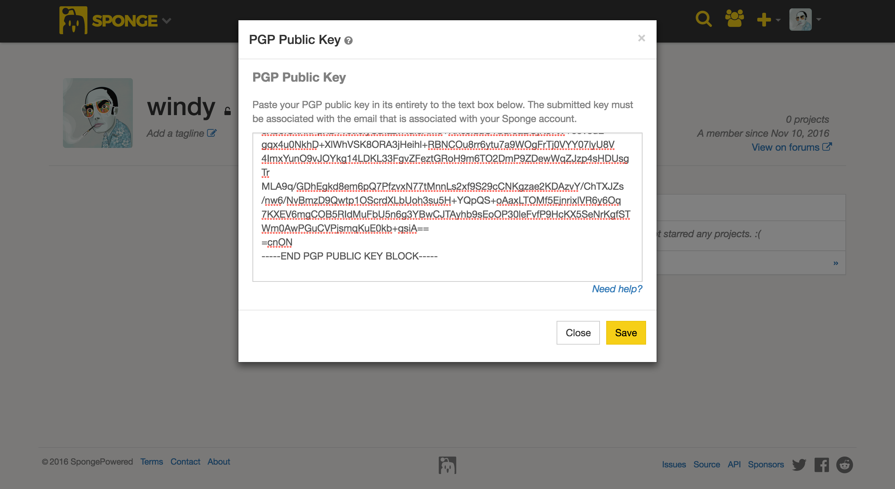

Eklentinizi Yayınlama¶
Sponge’s resmi plugin / mod deposu olan ‘ Ore <https://ore.spongepowered.org>’_, herkesin Sponge eklentilerini veya Forge modlarını yayınlayabileceği ücretsiz ve açık kaynaklı bir projedir.
Eklentinizi Paketleme¶
Ore requires any projects to be packaged with a mcmod.info descriptor file in the top-level of your JAR file. This
file is used to automatically infer some important details about your project to make the upload process easier. Ore
will reject your plugin if this file is missing from the JAR. Luckily, SpongeAPI has a built-in annotation processor
that creates this file for you automatically, on compile, using the @Plugin annotation that you have likely
already created in your plugin’s main class.
Not
ilk eklentinin oluşturulması ve derlenmesi hakkında daha fazla bilgi için , bkz :doc: ‘ / plugin/plugin-class’
Referans için, burada bir örnek mcmod.info dosya:
[
{
"modid": "my-plugin",
"name": "MyPlugin",
"version": "1.0.0",
"description": "My first plugin!",
"url": "https://spongepowered.org",
"authorList": [
"windy",
"Zidane",
"gabizou"
],
"requiredMods": [
"bookotd@1.0.0",
"ore-test@1.0.0",
"worldedit@1.0.0"
],
"dependencies": [
"bookotd@1.0.0",
"ore-test@1.0.0",
"worldedit@1.0.0"
]
}
]
Her Ore projesinin en azından``modid``, name and, version alanlarını doldurulması gerekir.
İmzalı Eklenti¶
Güvenlik kaynaklı sebeplerle Ore, her bir eklenti dosyasının (ZIP ya da JAR), Sponge’a kayıt olduğunuz e-posta adresiyle ilişkilendirilmiş bir açık anahtar için üretilmiş bağımsız bir Pretty Good Privacy (PGP) imzasıyla yüklenmesini gerektirir. Bu dijital imza, yüklenen herhangi bir dosyanın, gerçek hesap sahibi tarafından yüklendiğinden emin olunmasını sağlar.
Not
Bir dijital imza, bir belgeyi onaylar ve zaman damgalarıyla yazdırır. Belge daha sonra herhangi bir şekilde değiştirilirse imzanın doğrulanması başarısız olur. Dijital bir imza, kurcalamaya karşı dirençli olmanın ilave yararı olan elle yazılmış bir imzayla aynı amaca hizmet edebilir. Örneğin, GnuPG kaynak dağıtımı, kullanıcıların kaynak kodu paketlendiğinden beri değiştirilmediğini doğrulayabilmesi için imzalanır.
Eklentinizi imzalamak için, öncelikle GnuPG (GPG) gibi PGP uyumlu bir yazılım indirmelisiniz. GPG tüm popüler platformlar için mevcuttur ve yükleme dosyası `burada<https://www.gnupg.org/download/index.html#sec-1-2>`__ bulunabilir.
GPG’yi yükledikten ve ilk genel anahtarınızı oluşturduktan sonra, anahtarı hesabınıza eklemeniz gerekecektir. Bunu yapmak için, profilinize gidebilir ve avatarınızın yanındaki anahtar simgesini tıklatabilirsiniz.

You will then be prompted to enter your key into a text box. You must be sure to enter the key in its entirety or signature validation will fail.
Bitişte, oluşturduğunuz eklentiyi, yüklediğiniz genel anahtarın * özel * anahtarıyla imzalamanız gerekir. Yüklemekte olduğunuz dosyayı imzalamanız yeterlidir: örneğin, eklentinizinz JAR içerdiği bir ZIP yüklüyorsanız, yalnızca ZIP’in imzalanması gerekir. Yüklemek istediğiniz dosyayı imzalamanın en kolay yolu aşağıdaki GPG komutunu kullanmaktır.
gpg --output myplugin-1.0.0.jar.sig --detach-sig myplugin-1.0.0.jar
Not
If you’re using a build manager such as Gradle or Maven, there are plugins you can apply to your build script that can sign built artifacts and automate this laborious process for you. For more information, please refer to Gradle’s documentation or Maven’s documentation.
Eklentinizi yükleyin¶
Eklentinizin JAR dosyası üst düzeydeki bir mcmod.info tanımlayıcı dosyası ile paketlendiğinde ve PGP özel anahtarınızla imzalandığında, eklentiniz yüklenmeye hazır olacaktır! Ore üzerinde bir proje oluşturmak için aktif bir Sponge hesabınızın olması gerekir. Sağ üst köşedeki “Kaydol” düğmesine basmanız, sizi, hesap oluşturmak için uygun sayfaya götürecektir. Halihazırda bir hesabın varsa, Ore’a girmek için sağ üst köşedeki “Giriş” düğmesine basmanız yeterlidir.
Bir defa girildikten sonra, avatarına git ve yukarıda beliren “New” seçeneğini seç yada sadece “C” tuşuna bas.
Yükleme sırasında, oluşturma sihirbazı önce ana yükleme dosyanızı ve daha sonra da ayrılmış imzanızı isteyecektir.
Projenizi Ore’da Ayarlama¶
Eklentinizi yükledikten sonra, projenizi istediğiniz gibi yapılandırmak için size bazı ayarlar sunulacaktır. Endişelenmeyin, bunların hepsi daha sonra ayarlar panelinde değiştirilebilir. Projenizi oluşturduktan sonra Sponge kullanıcılarını projenizin bir parçası olmaya davet edebilirsiniz. Forumlarda kayıtlı herhangi bir kullanıcı, Ore’a hiç giriş yapmamış olsa bile bir projeye davet edilebilir. Projenizi oluşturduktan sonra, davet ettiğiniz kullanıcılar bir bildirim alır ve davetiyenizi kabul edebilir veya reddedebilir. Proje üyeleri davet kabul edilinceye kadar halka görünmeyeceklerdir.
Şu anda proje üyelerine atayabileceğin üç grup var: ‘Geliştirici’, ‘Editör’ ve ‘Destek’. Projeyi oluşturan kullanıcıya, projeye sınırsız erişime sahip olan ‘Owner’ atanacaktır. İşte her grup projenizde neler yapabileceğine dair hızlı bir özeti.
Sahibi¶
Bir projenin en fazla bir sahibinin olması, değiştirilemez (şimdiye kadar) ve sadece bir grup diğer üyelere görevler atayabilir.
Geliştiriciler¶
Geliştiriciler yayın kanalları, sayfalar oluşturabilir / düzenleyebilir ve sürümler oluşturabilir / düzenleyebilir.
Editör¶
Editörler sayfaları düzenleyebilir.
Destek¶
Destek, hiçbir şey yapamaz. Yalnızca üyeye projenin bir parçası olduğunu göstermenin bir yoludur.
Documenting Your Project With Pages¶
To document your plugin Ore offers the creation of pages. By default, you get a ‘Home’ page when you create your new Project. To add new pages, you can click on the ‘+’ icon in the Pages bar on the right of the screen; doing so will open a pop-up where you can choose a name and the parent page (adding a page on the Home page is not possible). If you choose the ‘<None>’ option the page will become a root page where you can later add child pages on. If you choose to add it to another page the page will only show when the parent page is expanded. To document your pages, you can use CommonMark.
Linking Pages¶
If you have the following tree structure in your pages:
- Home
- Komutlar
- Kullanıcı
- Admin
- Kurulum
- Config
- İzinler
And you want to add a link from the home page to the Config page in Setup you can use WikiLinks. To add a WikiLink use the format [[Link]] so on the home page you can add [[Setup/Config]] and this will get be converted to a link that is guaranteed to work.
Not
You can also specify a title for the link and separate it with a Pipe symbol so [[Title|Link]] will become a link with the title
Not
WikiLinks are only supported in Ore so if you use them on the Home-page they will not be displayed correctly on the forums. However, we still recommend using WikiLinks instead of normal links to guarantee the future working of your wiki.
Project States¶
When creating a new project, a banner will appear telling you your project is in a ‘new’ state. The new state is intended to indicated to users and admins you are still working on the setup of your project. If you have finished documenting your plugin to make it comply with the guidelines, click the ‘publish’ button to complete the process. However, if you don’t publish it yourself then the project will be published automatically 24 hours after its creation.
Needs Changes¶
Ore staff can hide your project and request changes; the changes in question will be listed in the banner. This state will hide your project from the public; if you are done you can send your project for approval.
Needs Approval¶
In this state your project is still hidden from the public while waiting for a staff member to review and validate the changes that were requested. Please be patient, the staff members might be busy with other tasks. If the project gets approved it will automatically become visible again. Please make sure to actually fix the points that require changes.